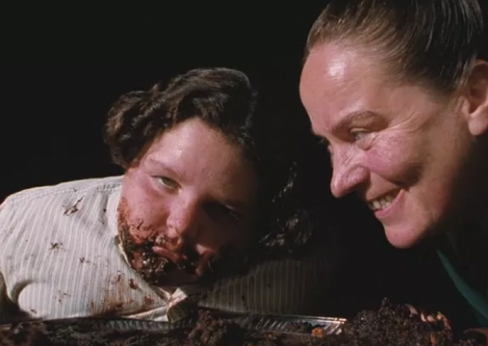

Chocolate Cake

Description
A one bowl chocolate cake recipe that is quick, easy, and delicious! Updated with gluten-free, dairy-free, and egg-free options!
Ingredients
- 2 cups all-purpose flour
- 2 cups sugar
- 3/4 cup unsweetened cocoa powder
- 2 teaspoons baking powder
- 1 1/2 teaspoons baking soda
- 1 teaspoon salt
- 1 teaspoon espresso powder homemade or store-bought
- 1 cup milk or buttermilk, almond, or coconut milk
- 1/2 cup vegetable oil or canola oil, or melted coconut oil
- 2 large eggs
- 2 teaspoons vanilla extract
- 1 cup boiling water
- Chocolate Buttercream Frosting Recipe-butter , unsweetened cocoa powder, conmfectioner's sugar,vanilla extract,espresso powder
Steps for Chocolate Buttercream Frosting
- Add cocoa to large bowl or bowl of stand mixer. Whisk through the cocoa well to remove any lumps.
- Then, add softened butter to the bowl with cocoa. Cream together the butter and cocoa powder until well-combined.
- Next, alternately add sugar and milk to the cocoa mixture by adding 1 cup of sugar followed by about a tablespoon of milk. After each addition has been combined, turn mixer onto a HIGH speed for about a minute. Repeat until all sugar and milk have been added. This is important – so please make sure to mix it just as described in these instructions. It makes the frosting into fluffy, delicious perfection!
- Then add your vanilla extract and espresso powder and combine well.
- If your frosting appears too dry, add more milk, only one tablespoon at a time until it reaches the right consistency.
- If it appears too wet and does not hold its form, add more confectioner’s sugar, only one tablespoon at a time until it reaches the right consistency.
Steps for Chocolate Cake
- Preheat oven to 350º F. Prepare two 9-inch cake pans by spraying with baking spray or buttering and lightly flouring.
- Add flour, sugar, cocoa, baking powder, baking soda, salt and espresso powder to a large bowl or the bowl of a stand mixer. Whisk through to combine or, using your paddle attachment, stir through flour mixture until combined well.
- Add milk, vegetable oil, eggs, and vanilla to flour mixture and mix together on medium speed until well combined. Reduce speed and carefully add boiling water to the cake batter until well combined.
- Distribute cake batter evenly between the two prepared cake pans. Bake for 30-35 minutes, until a toothpick or cake tester inserted in the center of the chocolate cake comes out clean.
- Remove from the oven and allow to cool for about 10 minutes, remove from the pan and cool completely.
- Frost cake with Chocolate Buttercream Frosting.
- Frost your cake or cupcakes as desired and enjoy!